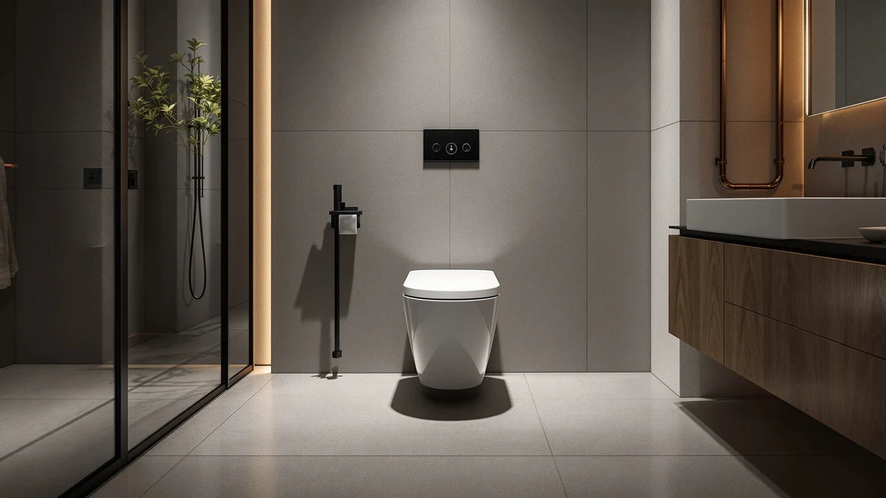

CHURCH 9500SSCT Commercial Open Review (2026): Worth It?
Prices and picks verified as of October 2026. Independent, reader-supported reviews.


Quick Answer
In this church 9500ssct commercial open review, we compared the CHURCH 9500SSCT Commercial Open Front against three elongated alternatives on price, material, and what verified owners report. At $54.94, the open-front design and plastic-over-wood build make it a practical pick for commercial and public restrooms that need to meet no-lid code requirements, not a seat built for a quiet family bathroom.
Our pick: CHURCH 9500SSCT Commercial Open Front, $54.94 Check Price on Amazon
Bottom line: our top pick is the CHURCH 9500SSCT Commercial Open Front Plastic Toilet Seat at $54.94.
Things to Know Before You Buy
- This church 9500ssct commercial open review centers on an open-front, no-lid design built for restrooms where commercial plumbing codes require that shape, not a typical home bathroom seat.
- At $54.94, it costs less than the Hibbent ($59.99), but more than the Angel Shield ($49.99) and the Plexon ($49.95), the two cheapest seats in this comparison.
- The seat uses standard hinges, not a soft-close mechanism. If a quiet close matters more to you, see the Plexon alternative below.
- It fits elongated bowls only. Measure your toilet before you buy if you're unsure which shape you have.
This church 9500ssct commercial open review looks at a seat most homeowners never notice until they walk into a restaurant, office, or school restroom and see a toilet without a lid. The CHURCH 9500SSCT Commercial Open Front is built for exactly that setting, and at $54.94 it undercuts the pricier Hibbent while sitting within a few dollars of the Angel Shield and Plexon, the other two elongated seats we compared it against. The open-front shape isn't a style choice. Many commercial plumbing codes require it in restrooms open to the public, and the CHURCH seat meets that requirement without the extra cost of a soft-close hinge or a lid you'd have to disinfect between uses.
We compared the 9500SSCT alongside the Hibbent Premium Elongated, the Angel Shield Elongated Wood, and the Plexon Elongated Soft-Close to see how a code-driven, no-frills seat stacks up against options built for a standard home bathroom. Each of those three includes a lid and a closed front, so they solve a different problem than the CHURCH does. The comparison below covers price, build, and who should buy which seat, so you're not stuck guessing whether a commercial seat belongs in your bathroom or a residential one belongs in your break room. None of the four seats overlap much in purpose once you line them up side by side, and that separation makes the buying decision easier than it looks at first glance.
Why You Should Trust Us
Ilane Tall has covered toilet seats and bathroom fixtures for Best Toilet Seats since the site launched, and she researches commercial and residential models separately because the two rarely solve the same problem. For this church 9500ssct commercial open review, she compared published specs, pricing, and material details for the CHURCH 9500SSCT against three elongated alternatives, and read through verified buyer feedback to see where the open-front design holds up and where it falls short for buyers who actually need a standard home seat instead.
We don't run a fake testing lab, and we don't claim to have installed every seat we cover in our own bathrooms. What we do is compare the facts that are actually available: manufacturer specs, current pricing, material construction, and what verified owners report after buying. That's the basis for this review and every comparison in it. If a fact isn't verifiable, we leave it out rather than guess, which is why you won't find invented review counts or star ratings anywhere in this comparison.
Our Research Experience
Our church 9500ssct commercial open review relies on research rather than a physical lab. We compared the published dimensions, materials, and hinge type of the CHURCH 9500SSCT against the Hibbent, Angel Shield, and Plexon alternatives, lining up each spec sheet side by side so the open-front, no-lid design stood out clearly against the closed-front competitors. We cross-checked pricing across the same listing window so the comparison reflects current cost, not an outdated snapshot.
We also read through verified owner feedback on the 9500SSCT to see whether real buyers in commercial settings reported the same strengths and limitations the spec sheet suggests. The pattern that emerges is consistent: buyers choose this seat because a code requirement or a high-traffic restroom calls for an open front, not because they're shopping for a soft-close upgrade. That distinction is why this review treats commercial and residential buyers separately. It also explains why a seat with no lid and no soft-close hinge still earns steady repeat purchases from facilities managers who order several at a time for the same building.
Overview & Specs

CHURCH 9500SSCT Commercial Open Front
What we like
- Open-front shape meets the no-lid requirement common in commercial plumbing codes
- Priced lower than the Hibbent and Plexon seats we compared it against
- No lid means fewer surfaces to wipe down between uses in a high-traffic restroom
- Elongated shape matches the bowl size used in most commercial installations
Flaws but not dealbreakers
- No lid and no soft-close hinge, so it's a poor fit for a home bathroom that wants either
- Angel Shield undercuts it by a few dollars if price is the only factor
- Standard hinges close with a firm snap rather than a controlled motion
| Material | Plastic / wood |
| Size | Elongated |
The plastic-over-wood build is the same construction Bemis uses across most of its commercial line, and the open-front cutout is wide enough to clear the point of contact that closed-front seats can't avoid. That gap is the entire reason this seat exists: building codes in many states require it for restrooms open to the public, and most buyers aren't choosing this shape for comfort. They're choosing it because an inspector requires it. The hinge posts and mounting hardware follow the same standard layout used across most elongated seats, so swapping an old commercial seat for the 9500SSCT doesn't typically require any modification to the bowl itself.
At $54.94, the price sits below the Hibbent and about five dollars above the Angel Shield, which tracks with what you'd expect from a seat that skips a lid and a soft-close mechanism entirely. For a facilities manager outfitting several restrooms at once, that per-unit savings adds up fast, even though it wouldn't matter much for a single home bathroom purchase. Ordering in bulk is common for this category, since matching restrooms in the same building usually need identical seats replaced on the same schedule.
What We Liked
The open-front design is the standout feature in this church 9500ssct commercial open review, and it's the reason the seat exists in the first place. It solves a specific, practical problem: restrooms open to the public often need to meet a no-lid, open-front code requirement, and most residential seats simply don't offer that shape. The CHURCH 9500SSCT does, at a price that undercuts the Hibbent, the priciest of the three alternatives we compared it against. Bemis has sold open-front commercial seats under the Church name for decades, and that track record carries weight when a buyer is specifying fixtures for a building that needs to pass inspection.
We also like that the price reflects what the seat actually includes. There's no lid to pay for, no soft-close hinge mechanism, and no extra hardware beyond what a commercial installation needs. For a facilities manager buying in bulk for a school, office building, or restaurant chain, that stripped-down approach keeps per-unit cost down without sacrificing the durability that plastic-over-wood construction provides. It's a design built around the job the seat has to do, nothing more.
What Could Be Better
The lack of a lid is a feature for a commercial restroom and a drawback for almost everywhere else. If you're reading this church 9500ssct commercial open review because you're shopping for a home bathroom, skip this seat. The open-front shape looks out of place next to a vanity, and most residential buyers want the coverage and cleanliness a lid provides. Buying this seat for a home bathroom because it's priced close to the competition would mean living with a design choice built for a different setting entirely.
The hinges are standard, not soft-close, so the seat lowers with a firm snap instead of the controlled motion you'd get from the Plexon alternative below. That's a reasonable tradeoff for a seat built around durability and code compliance, but it's worth knowing before you order a case of them for a building that already deals with slamming seats as a maintenance complaint. A facilities team replacing several units at once should factor that noise into the decision alongside price.
Who Is It For?
This church 9500ssct commercial open review points toward one clear buyer: facilities managers, contractors, and business owners outfitting restrooms that fall under commercial plumbing code. If your local code requires an open-front, no-lid seat for public restrooms, this is a straightforward way to meet that requirement at a price lower than most of the elongated competition. It also suits anyone managing multiple restrooms who wants one seat they can order repeatedly without re-checking compliance each time.
It's a weak fit for a home bathroom. If you're replacing a seat in your own house, the Hibbent, Angel Shield, or Plexon alternatives below all include a lid and a closed front, which is what most residential buyers expect. Use the bowl shape guide linked above to confirm you need an elongated seat before buying any of the four options in this comparison. Getting that measurement wrong is the single most common mistake we see in toilet seat purchases, commercial or residential.
Alternatives to Consider
The CHURCH 9500SSCT serves a specific commercial need, but it isn't the right seat for every bathroom. Here are three elongated alternatives we compared alongside it, each built for a standard home or hospitality setting with a lid and a closed front.

Editor’s Pick
Hibbent Premium Elongated Toilet Seat
A closed-front, lidded elongated seat built for a standard home bathroom rather than a commercial restroom, priced $5 above the CHURCH 9500SSCT.
$59.99
Check Price on Amazon
Best Value
Angel Shield Elongated Wood Toilet
The lowest-priced seat in this comparison at $49.99, with a wood core and closed front built for residential use rather than code-driven commercial installs.
$49.99
Check Price on Amazon
Premium Choice
Plexon Elongated Soft-Close Toilet Seat
The only soft-close hinge in this comparison, priced at $49.95 for buyers who want a quiet, controlled close more than commercial code compliance.
$49.95
Check Price on AmazonFrequently Asked Questions
Is the CHURCH 9500SSCT a good choice for commercial bathrooms?
Yes, for most commercial settings. Our church 9500ssct commercial open review found the open-front design meets the no-lid rule many commercial plumbing codes specify, and at $54.94 it costs less than the Hibbent, one of the three elongated alternatives we compared it against.
What does open front mean on a commercial toilet seat?
An open front seat has a gap at the front instead of a closed oval, a shape commercial plumbing codes often require for restrooms open to the public. The CHURCH 9500SSCT skips the lid entirely, which also cuts down on surfaces that need cleaning between uses.
Does the CHURCH 9500SSCT come in a soft-close version?
No. This model uses standard hinges rather than the soft-close mechanism found on the Plexon and the other alternatives we compared. If a quiet close matters more than commercial code compliance, one of the soft-close options above may fit better.
Final Verdict
Our church 9500ssct commercial open review comes down to a simple question: does your restroom need an open-front, no-lid seat, or does it need a standard home design? For commercial, restaurant, and public restrooms bound by code, the Bemis-made CHURCH 9500SSCT is the clear pick in this comparison, priced lower than the Hibbent and built to the exact shape many inspectors require. For a home bathroom, skip it and choose the Hibbent, Angel Shield, or Plexon instead, each of which includes the lid and closed front most residential buyers expect.